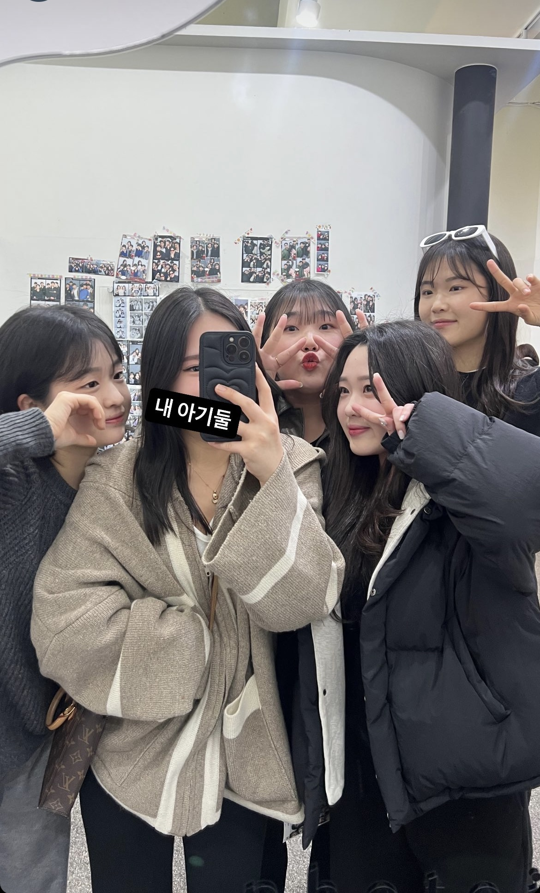
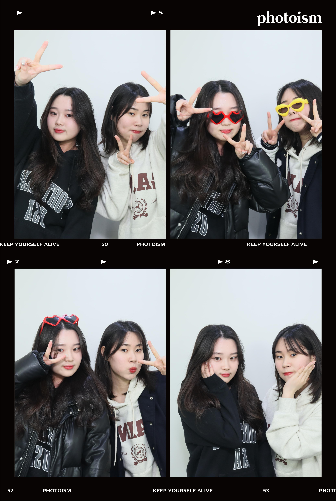
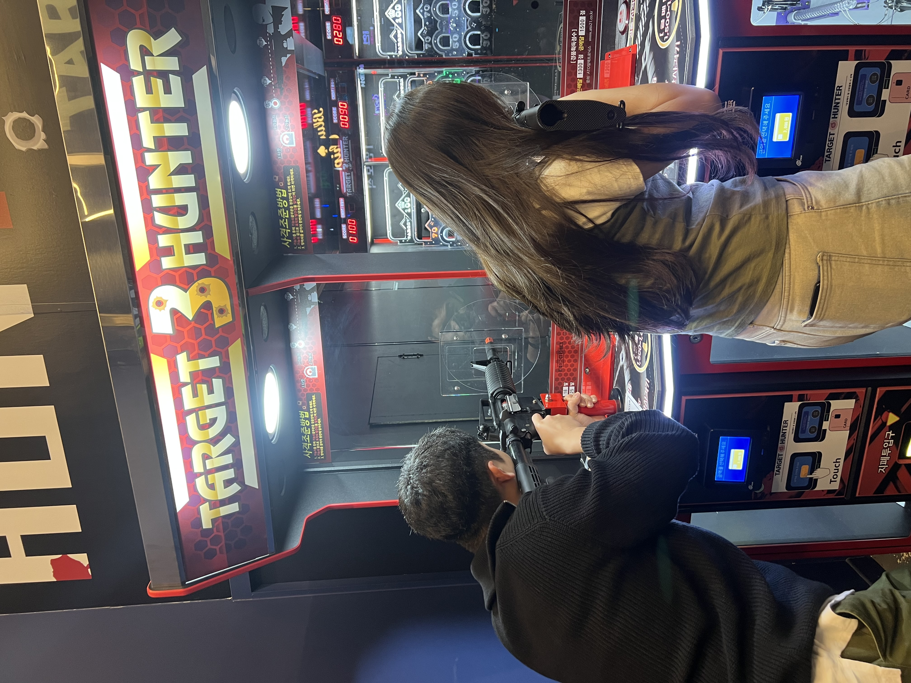
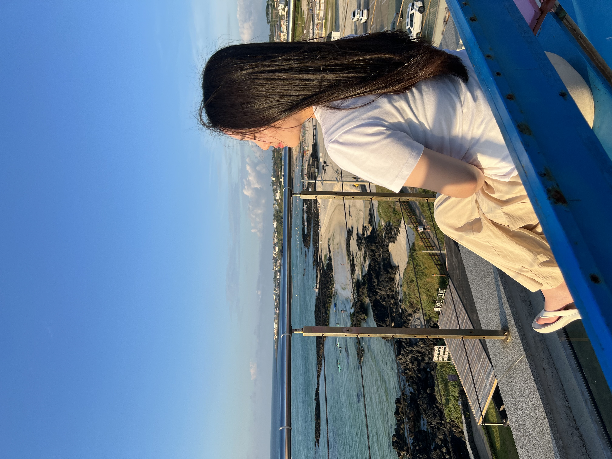
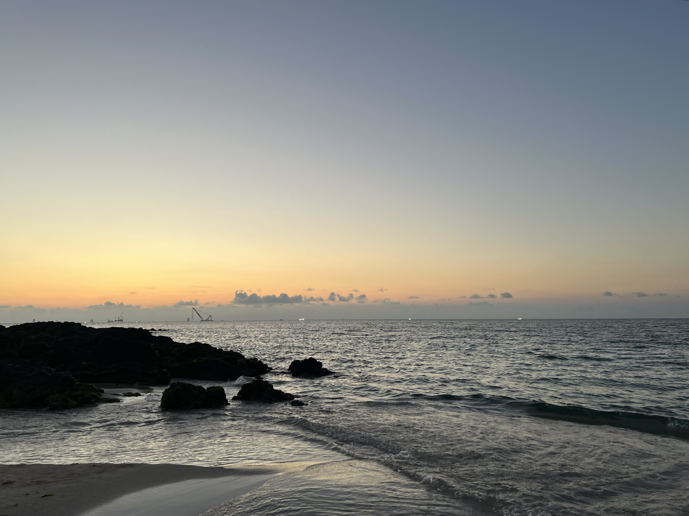
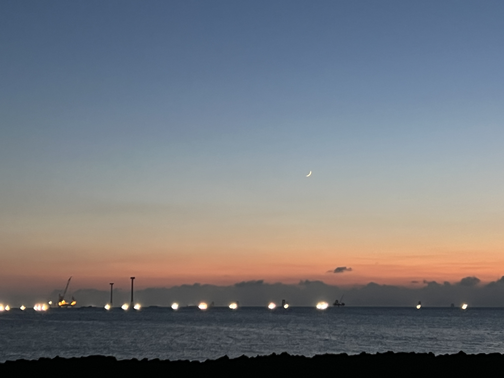
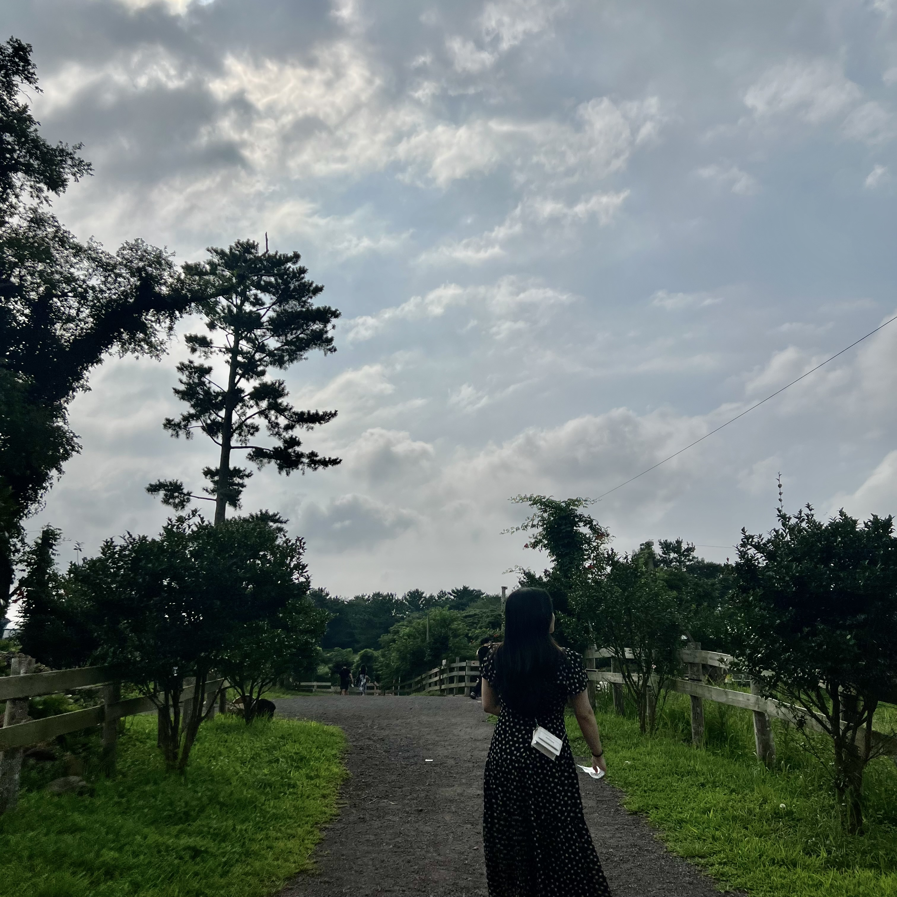
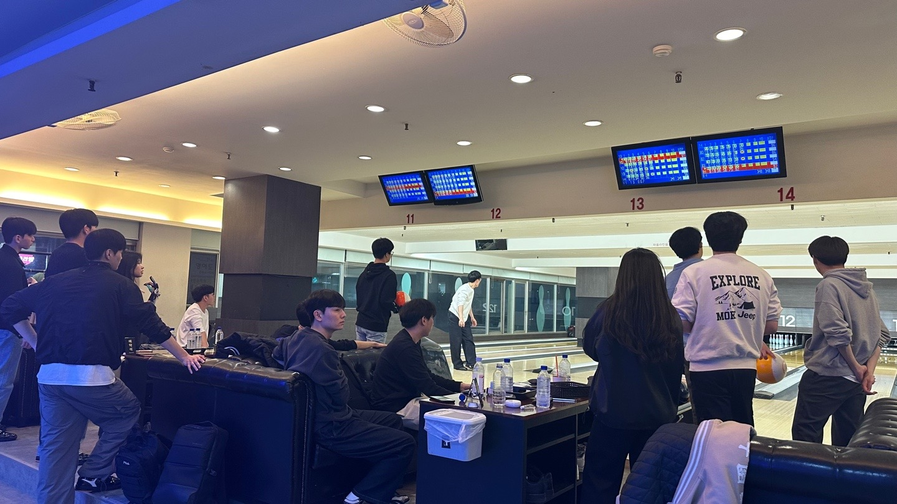

프로필
이름 : 주연서
학교 : 단국대학교
학번 : 32224494
생년월일 : 2003.11.14
이메일 : wndustj1114@naver.com
일상
친구들과의 일상을 담은 사진들 입니다.
사진에 보이는 친구들은 저의 10년지기 친구들 입니다.
학과 친구와 찍은 인생네컷
친구들과 사격하는 모습
여행
저는 제주도를 정말 좋아합니다.
아래 모습은 제가 제주도에 여행갔을 때 찍은 사진들 입니다.
뷰가 정말 예쁜 카페에서 찍은 사진
제주 바다
노을진 제주 바다
목장에서 찍은 사진
볼링 동아리 활동
저희 동아리 이름은 '스플릿' 입니다.
매주 수요일마다 정기전을 하고 평소에는 시간이 되는 사람들끼리 따로 모여 볼링을 치기도 합니다.
볼링을 통해 스트레스를 해소하는 것뿐만 아니라, 새로운 경험과 사람들을 만나고 있습니다.
정기전을 진행중인 모습
내가 좋아하는 것들
다음은 제가 좋아하는 몇 가지입니다:
- 음악: 저는 팝송을 좋아합니다. 특히 잔잔한 팝송은 공부를 하며 자주 듣습니다.
- 영화: 저는 평소에 영화를 보는 것을 좋아합니다. 특히 마블 시리즈와 디즈니를 좋아합니다.
- 여행: 저는 바다를 좋아해서 바닷가에 여행가는 것을 좋아합니다.
- 게임: 저는 가끔 게임을 하며 스트레스를 풀기도 합니다.
- 동물: 저는 강아지를 너무 좋아합니다.
떡국이
제가 정말 좋아하는 제 친구의 강아지를 소개하겠습니다.
이름 : 박떡국
나이 :2살
종 : 포메라니안
가능한 개인기 : 손, 발, 앉아, 엎드려, 코